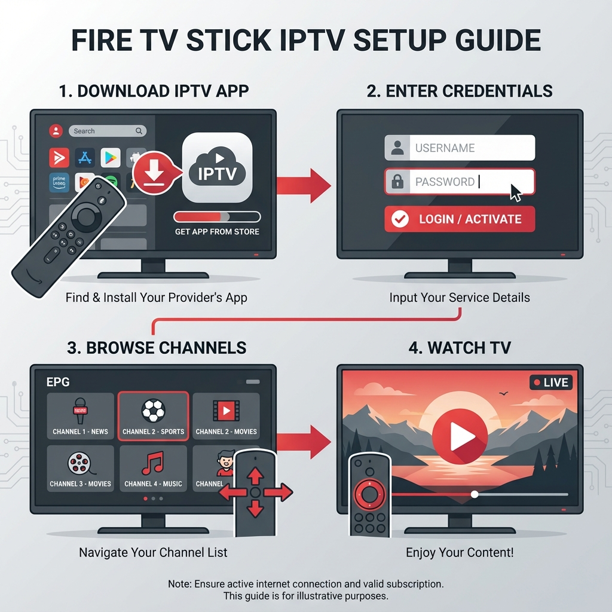

Le Fire TV Stick d'Amazon est devenu l'un des appareils de streaming les plus populaires au Québec. Combiné à un service IPTV de qualité, il offre une expérience de divertissement incomparable. Dans ce guide complet, nous allons explorer comment tirer le maximum de votre Fire Stick avec l'IPTV.
Que vous soyez nouveau dans le monde de l'IPTV Québec ou que vous cherchiez à optimiser votre configuration actuelle, cet article vous donnera toutes les clés pour profiter de plus de 25,000 chaînes en HD et 4K.
Qu'est-ce que le Fire TV Stick?
Le Fire TV Stick est un appareil de streaming compact développé par Amazon. Il se branche directement sur le port HDMI de votre téléviseur et transforme n'importe quel écran en Smart TV. Voici ses principales caractéristiques:
- Taille compacte - Plus petit qu'une clé USB, il se cache derrière votre téléviseur
- Processeur puissant - Capable de gérer le streaming en 4K Ultra HD
- Wi-Fi intégré - Connexion sans fil à votre réseau domestique
- Télécommande vocale Alexa - Contrôlez votre contenu par la voix
- Interface intuitive - Fire OS est facile à naviguer
Disponible en plusieurs versions (Fire TV Stick Lite, Fire TV Stick standard, Fire TV Stick 4K et Fire TV Stick 4K Max), chaque modèle offre différentes capacités selon vos besoins et votre budget.
Compatibilité avec l'IPTV
La bonne nouvelle pour les amateurs d'IPTV au Québec, c'est que le Fire TV Stick est parfaitement compatible avec la plupart des services IPTV. Son système d'exploitation Android-based permet d'installer facilement des applications de streaming.
Voici pourquoi le Fire Stick est idéal pour l'IPTV:
- Support des formats vidéo - Compatible avec H.264, H.265/HEVC, VP9
- Applications tierces - Possibilité d'installer des apps hors Amazon Store
- Performance stable - Mémoire RAM suffisante pour le streaming en direct
- Mises à jour régulières - Sécurité et nouvelles fonctionnalités
💡 Conseil: Pour une expérience IPTV optimale, nous recommandons le Fire TV Stick 4K ou 4K Max. Ces modèles offrent plus de puissance de traitement et une meilleure qualité d'image pour vos chaînes en haute définition.
Installation étape par étape
L'installation de l'IPTV sur votre Fire Stick est plus simple qu'il n'y paraît. Suivez notre guide en 4 étapes:

Étape 1: Préparer votre Fire Stick
Avant d'installer une application IPTV, vous devez activer l'installation d'applications tierces:
- Allez dans Paramètres > Ma Fire TV
- Sélectionnez Options pour les développeurs
- Activez Applications de sources inconnues
- Confirmez votre choix
Étape 2: Télécharger l'application Downloader
L'application Downloader vous permet d'installer facilement des APK sur votre Fire Stick:
- Ouvrez l'Amazon Appstore
- Recherchez "Downloader"
- Installez l'application gratuite
Étape 3: Installer votre application IPTV
Maintenant, installez l'application IPTV recommandée par votre fournisseur:
- Ouvrez Downloader
- Entrez l'URL de l'application IPTV fournie
- Téléchargez et installez l'APK
- Ouvrez l'application et entrez vos identifiants
Étape 4: Configurer votre service
Une fois l'application installée:
- Lancez l'application IPTV
- Entrez les informations de connexion fournies par VotreSite
- Attendez le chargement de la liste des chaînes
- Profitez de vos +25,000 chaînes!
Les meilleures applications IPTV pour Fire Stick
Plusieurs applications IPTV sont compatibles avec le Fire TV Stick. Voici les plus populaires au Québec:
- IPTV Smarters Pro - Interface intuitive, EPG intégré, support multi-écran
- TiviMate - Considérée comme la meilleure, interface moderne
- GSE Smart IPTV - Gratuite avec fonctionnalités premium
- Perfect Player - Légère et rapide, idéale pour les anciens Fire Stick
- Flix IPTV - Design épuré, facile à utiliser
Chez VotreSite, nous fournissons une assistance complète pour configurer l'application de votre choix. Notre équipe de support est disponible 24/7 pour vous guider.
Optimisation des performances
Pour une expérience IPTV sans buffering, suivez ces conseils d'optimisation:
Connexion Internet
- Utilisez une connexion minimum 25 Mbps pour le streaming HD
- 50 Mbps ou plus recommandé pour le 4K
- Privilégiez le Wi-Fi 5 GHz plutôt que 2.4 GHz
- Considérez un adaptateur Ethernet pour une connexion filaire
Optimisation du Fire Stick
- Effacez régulièrement le cache des applications
- Désinstallez les applications inutilisées
- Redémarrez votre appareil hebdomadairement
- Gardez le firmware à jour
Paramètres de l'application IPTV
- Activez le décodage hardware pour de meilleures performances
- Ajustez la taille du buffer selon votre connexion
- Utilisez le lecteur externe si l'interne pose problème
⚡ Performance: Avec un abonnement IPTV VotreSite et un Fire TV Stick 4K, vous bénéficiez de notre technologie Anti-Freeze™ qui garantit une diffusion fluide même pendant les heures de pointe.
Prêt à transformer votre Fire Stick?
Découvrez nos forfaits IPTV et profitez de 25,000+ chaînes en HD/4K avec activation instantanée et support 24/7.
Voir les forfaitsConclusion
Le Fire TV Stick combiné à un service IPTV fiable comme VotreSite représente la solution idéale pour accéder à des milliers de chaînes à un prix abordable. L'installation est simple, les performances sont excellentes, et la portabilité de l'appareil vous permet d'emmener votre divertissement partout.
Que vous souhaitiez regarder les chaînes québécoises, les sports en direct, les films récents ou les séries du moment, cette combinaison vous offre tout ce dont vous avez besoin. N'hésitez pas à contacter notre équipe pour un essai gratuit de 24h et découvrir par vous-même la qualité de notre service.
Avec les bons réglages et un abonnement IPTV Québec de qualité, votre Fire Stick deviendra le centre de divertissement de toute la famille!